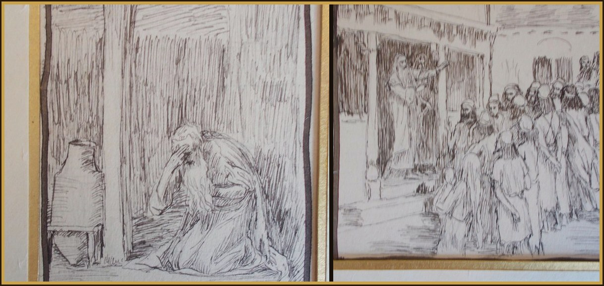
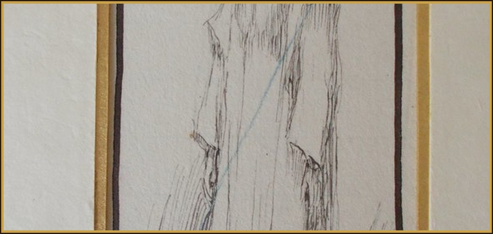
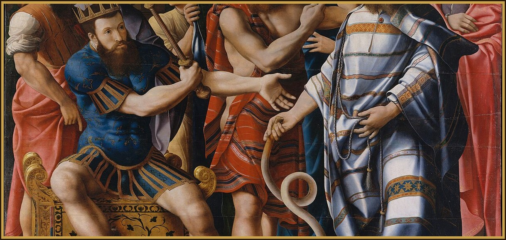

Intention the favor I place in your hands
Days 28–54: prayed in thanksgiving. Joyful Mysteries.
Opening
The Sign of the Cross
In the name of the Father, and of the Son, and of the Holy Spirit, Amen.
Novena Opening Offering (in Thanksgiving)
Hail, Queen of the Most Holy Rosary, my Mother Mary, hail! At thy feet I gratefully kneel to offer thee a Crown of Roses, snow-white buds to remind thee of thy joys, each bud recalling to thee a holy mystery; each ten bound together with my thanksgiving for the favor I place in your hands. O Holy Queen, dispenser of God's graces, and Mother of all who invoke thee! Thou canst not look upon my gift and fail to see its binding. As thou receivest my gift, so wilt thou receive my thanksgiving; from thy bounty thou hast given me the favor I so earnestly and trustingly sought. I despaired not of what I asked of thee, and thou hast truly shown thyself my Mother!
The Apostles’ Creed
I believe in God, the Father Almighty, Creator of heaven and earth, and in Jesus Christ, His only Son, our Lord, who was conceived by the Holy Spirit, born of the Virgin Mary, suffered under Pontius Pilate, was crucified, died and was buried; He descended into hell; on the third day He arose again from the dead; He ascended into heaven, and is seated at the right hand of God the Father Almighty; from there He will come to judge the living and the dead. I believe in the Holy Spirit, the Holy Catholic Church, the communion of Saints, the forgiveness of sins, the resurrection of the body, and life everlasting. Amen.
Our Father
Our Father, Who art in Heaven, hallowed be Thy name. Thy Kingdom come, Thy will be done on earth as it is in Heaven. Give us this day our daily bread; and forgive us our trespasses as we forgive those who trespass against us; and lead us not into temptation, but deliver us from evil. Amen.
Hail Mary (three times, for faith, hope and charity)
Hail Mary, full of Grace, the Lord is with thee. Blessed art thou among women and blessed is the fruit of thy womb, Jesus. Holy Mary, Mother of God, pray for us sinners now and at the hour of our death, Amen.
Glory Be
Glory be to the Father, and to the Son, and to the Holy Spirit. As it was in the beginning, is now and ever shall be, world without end. Amen.
Fatima Prayer
O my Jesus, forgive us our sins, save us from the fires of hell, lead all souls to Heaven, especially those in most need of Thy mercy
Decade 1 · The First Joyful Mystery - The Annunciation
Fruit: Humility · Luke 1:26
meditating on the Mystery of the Annunciation, when the angel Gabriel appeared to you with the news that you were to become the Mother of God. He greeted you with that sublime salutation, “Hail, full of grace! The Lord is with thee!” and you did humbly submit yourself to the will of the Father, responding: “Behold the handmaid of the Lord. Be it done unto me according to thy word,”
Our Father
Our Father, Who art in Heaven, hallowed be Thy name. Thy Kingdom come, Thy will be done on earth as it is in Heaven. Give us this day our daily bread; and forgive us our trespasses as we forgive those who trespass against us; and lead us not into temptation, but deliver us from evil. Amen.
Hail Mary (ten times)
Hail Mary, full of Grace, the Lord is with thee. Blessed art thou among women and blessed is the fruit of thy womb, Jesus. Holy Mary, Mother of God, pray for us sinners now and at the hour of our death, Amen.
Glory Be
Glory be to the Father, and to the Son, and to the Holy Spirit. As it was in the beginning, is now and ever shall be, world without end. Amen.
Fatima Prayer
O my Jesus, forgive us our sins, save us from the fires of hell, lead all souls to Heaven, especially those in most need of Thy mercy
Binding the bouquet (in Thanksgiving)
Sweet Mother Mary, I offer thee this spiritual communion to bind the bouquet in a wreath to place upon thy brow in thanksgiving for the favor I place in your hands, which thou in thy love hast obtained for me.
Decade 2 · The Second Joyful Mystery - The Visitation
Fruit: Charity Towards My Neighbor · Luke 1:39
meditating on the Mystery of the Visitation, when, upon your visit to your holy cousin, Elizabeth, she greeted you with the prophetic utterance, “Blessed art thou among women, and blessed is the fruit of thy womb!” and you answered with that canticle of canticles, the Magnificat,
Our Father
Our Father, Who art in Heaven, hallowed be Thy name. Thy Kingdom come, Thy will be done on earth as it is in Heaven. Give us this day our daily bread; and forgive us our trespasses as we forgive those who trespass against us; and lead us not into temptation, but deliver us from evil. Amen.
Hail Mary (ten times)
Hail Mary, full of Grace, the Lord is with thee. Blessed art thou among women and blessed is the fruit of thy womb, Jesus. Holy Mary, Mother of God, pray for us sinners now and at the hour of our death, Amen.
Glory Be
Glory be to the Father, and to the Son, and to the Holy Spirit. As it was in the beginning, is now and ever shall be, world without end. Amen.
Fatima Prayer
O my Jesus, forgive us our sins, save us from the fires of hell, lead all souls to Heaven, especially those in most need of Thy mercy
Binding the bouquet (in Thanksgiving)
Sweet Mother Mary, I offer thee this spiritual communion to bind the bouquet in a wreath to place upon thy brow in thanksgiving for the favor I place in your hands, which thou in thy love hast obtained for me.
Decade 3 · The Third Joyful Mystery - The Nativity
Fruit: Detachment From The World · Luke 2:1
meditating on the Mystery of the Nativity of Our Lord, when, your time being completed, you brought forth, O holy Virgin, the redeemer of the world in a stable at Bethlehem; whereupon choirs of angels filled the Heavens with their exultant song of praise – “Glory to God in the highest, and on Earth peace to people of good will,”
Our Father
Our Father, Who art in Heaven, hallowed be Thy name. Thy Kingdom come, Thy will be done on earth as it is in Heaven. Give us this day our daily bread; and forgive us our trespasses as we forgive those who trespass against us; and lead us not into temptation, but deliver us from evil. Amen.
Hail Mary (ten times)
Hail Mary, full of Grace, the Lord is with thee. Blessed art thou among women and blessed is the fruit of thy womb, Jesus. Holy Mary, Mother of God, pray for us sinners now and at the hour of our death, Amen.
Glory Be
Glory be to the Father, and to the Son, and to the Holy Spirit. As it was in the beginning, is now and ever shall be, world without end. Amen.
Fatima Prayer
O my Jesus, forgive us our sins, save us from the fires of hell, lead all souls to Heaven, especially those in most need of Thy mercy
Binding the bouquet (in Thanksgiving)
Sweet Mother Mary, I offer thee this spiritual communion to bind the bouquet in a wreath to place upon thy brow in thanksgiving for the favor I place in your hands, which thou in thy love hast obtained for me.
Decade 4 · The Fourth Joyful Mystery - The Presentation
Fruit: Purity · Luke 2:22
meditating on the Mystery of the Presentation, when, in obedience to the Law of Moses, you presented the Child in the temple, where the holy prophet Simeon, taking the Child in his arms, offered thanks to God for allowing him to look upon his Saviour,
Our Father
Our Father, Who art in Heaven, hallowed be Thy name. Thy Kingdom come, Thy will be done on earth as it is in Heaven. Give us this day our daily bread; and forgive us our trespasses as we forgive those who trespass against us; and lead us not into temptation, but deliver us from evil. Amen.
Hail Mary (ten times)
Hail Mary, full of Grace, the Lord is with thee. Blessed art thou among women and blessed is the fruit of thy womb, Jesus. Holy Mary, Mother of God, pray for us sinners now and at the hour of our death, Amen.
Glory Be
Glory be to the Father, and to the Son, and to the Holy Spirit. As it was in the beginning, is now and ever shall be, world without end. Amen.
Fatima Prayer
O my Jesus, forgive us our sins, save us from the fires of hell, lead all souls to Heaven, especially those in most need of Thy mercy
Binding the bouquet (in Thanksgiving)
Sweet Mother Mary, I offer thee this spiritual communion to bind the bouquet in a wreath to place upon thy brow in thanksgiving for the favor I place in your hands, which thou in thy love hast obtained for me.
Decade 5 · The Fifth Joyful Mystery - The Finding of the Child Jesus in the Temple
Fruit: True Wisdom · Luke 2:41
meditating on the Mystery of the Finding of the Child Jesus in the Temple, when, having sought Him for three days, distressed and anxious at His absence, your heart was gladdened when you found Him in the temple speaking to the doctors; and upon your request, He obediently returned home,
Our Father
Our Father, Who art in Heaven, hallowed be Thy name. Thy Kingdom come, Thy will be done on earth as it is in Heaven. Give us this day our daily bread; and forgive us our trespasses as we forgive those who trespass against us; and lead us not into temptation, but deliver us from evil. Amen.
Hail Mary (ten times)
Hail Mary, full of Grace, the Lord is with thee. Blessed art thou among women and blessed is the fruit of thy womb, Jesus. Holy Mary, Mother of God, pray for us sinners now and at the hour of our death, Amen.
Glory Be
Glory be to the Father, and to the Son, and to the Holy Spirit. As it was in the beginning, is now and ever shall be, world without end. Amen.
Fatima Prayer
O my Jesus, forgive us our sins, save us from the fires of hell, lead all souls to Heaven, especially those in most need of Thy mercy
Binding the bouquet (in Thanksgiving)
Sweet Mother Mary, I offer thee this spiritual communion to bind the bouquet in a wreath to place upon thy brow in thanksgiving for the favor I place in your hands, which thou in thy love hast obtained for me.
Closing
Spiritual Communion
My Jesus, I believe that Thou art present in the Most Holy Sacrament. I love Thee above all things, and I desire to receive Thee into my soul. Since I cannot at this moment receive Thee sacramentally, come at least spiritually into my heart. I embrace Thee as if Thou wert already there and unite myself wholly to Thee. Never permit me to be separated from Thee. Amen.
Closing Prayer in Thanksgiving
Sweet Mother Mary, I offer thee this spiritual communion to bind my bouquets in a wreath to place upon thy brow in thanksgiving for the favor I place in your hands, which thou in thy love hast obtained for me.
Hail, Holy Queen
Hail, Holy Queen, Mother of Mercy, our life, our sweetness, and our hope. To Thee do we cry, poor banished children of Eve. To Thee do we send up our sighs, mourning and weeping in this valley of tears. Turn then, most gracious advocate, Thine eyes of mercy towards us. And after this our exile, show unto us the blessed Fruit of Thy womb, Jesus. Oh clement, Oh loving, Oh sweet Virgin Mary.
Versicle
Pray for us, O Holy Mother of God That we may be made worthy of the promises of Christ
Let us pray
O God! Whose only-begotten Son, by His life, death, and resurrection, has purchased for us the rewards of eternal life; grant, we beseech Thee, that, meditating on these mysteries of the Most Holy Rosary of the Blessed Virgin Mary, we may both imitate what they contain and obtain what they promise, through the same Christ our Lord. Amen.
The Sign of the Cross
In the name of the Father, and of the Son, and of the Holy Spirit, Amen.
Day 6
You are sleepless; you want to judge everything, direct everything and see to everything and you surrender to human strength, or worse — to men themselves, trusting in their intervention. This is what hinders my words and my views. Oh, how much I wish from you this surrender, to help you; and how I suffer when I see you so agitated! Satan tries to do exactly this: to agitate you and to remove you from my protection and to throw you into the jaws of human initiative. So, trust only in me, rest in me, surrender to me in everything.
Ten times
O Jesus, I surrender myself to you, take care of everything!
To Our Lady
Mother, I am yours now and forever. Through you and with you I always want to belong completely to Jesus.
1And the Lord said to Moses: “Now you will see what I shall do to Pharaoh. For through a strong hand he will release them, and by a mighty hand he will cast them from his land.” 2And the Lord spoke to Moses, saying: “I am the Lord, 3who appeared to Abraham, to Isaac, and to Jacob as Almighty God. And I did not reveal to them my name: ADONAI. 4And I formed a covenant with them, in order to give them the land of Canaan, the land of their sojourning, in which they were newcomers. 5I have heard the groaning of the sons of Israel, with which the Egyptians have oppressed them. And I have remembered my covenant. 6For this reason, say to the sons of Israel: I am the Lord who will lead you away from the work house of the Egyptians, and rescue you from servitude, and also redeem you with an exalted arm and great judgments. 7And I will take you to myself as my people, and I will be your God. And you will know that I am the Lord your God, who led you away from the work house of the Egyptians, 8and who brought you into the land, over which I lifted up my hand in order to grant it to Abraham, Isaac, and Jacob. And I will grant it to you as a possession. I am the Lord.” 9And so, Moses explained all these things to the sons of Israel, who did not agree with him, because of their anguish of spirit and very difficult work. 10And the Lord spoke to Moses, saying:

_for_Brunoff_107_Dieu_rassure_Mo%C3%AFse.jpg){kind=link}
_for_Brunoff_108_Mo%C3%AFse_parle_au_peuple.jpg){kind=link}
11“Enter and speak to Pharaoh, king of Egypt, so that he may release the sons of Israel from his land.” 12Moses responded in the sight the Lord: “Behold, the sons of Israel do not listen to me. And how will Pharaoh listen to me, especially since I am of uncircumcised lips?” 13And the Lord spoke to Moses and Aaron, and he gave them a commandment for the sons of Israel, and for Pharaoh, the king of Egypt, that they should lead the sons of Israel away from the land of Egypt. 14These are the leaders of the houses by their families. The sons of Reuben, the firstborn of Israel: Hanoch and Pallu, Hezron and Carmi. 15These are the kindred of Reuben. The sons of Simeon: Jemuel and Jamin, and Ohad, and Jachin, and Zohar, and Shaul, the son of a Canaanite women. These are the progeny of Simeon. 16And these are the names of the sons of Levi by their kindred: Gershon, and Kohath, and Merari. Now the years of the life of Levi were one hundred and thirty-seven. 17The sons of Gershon: Libni and Shimei, by their kindred. 18The sons of Kohath: Amram, and Izhar, and Hebron and Uzziel. Likewise, the years of the life of Kohath were one hundred and thirty-three. 19The sons of Merari: Mahli and Mushi. These are the kindred of Levi by their families. 20Now Amram took as a wife Jochebed, his paternal aunt, who bore for him Aaron and Moses. And the years of the life of Amram were one hundred and thirty-seven.

- Aaron (Exodus 4 16) — James Tissot (c. 1896–1902) · Public domain · source
_for_Brunoff_116_Aaron.jpg){kind=link}
21Likewise, the sons of Izhar: Korah, and Nepheg, and Zichri. 22Likewise, the sons of Uzziel: Mishael, and Elzaphan, and Sithri. 23Now Aaron took as a wife Elizabeth, the daughter of Amminadab, sister of Nahshon, who bore for him Nadab, and Abihu, and Eleazar, and Ithamar. 24Likewise, the sons of Korah: Assir, and Elkanah, and Abiasaph. These are the kindred of the Korahites. 25And truly Eleazar, the son of Aaron, took a wife from the daughters of Putiel. And she bore him Phinehas. These are the heads of the Levitical families by their kindred. 26These are Aaron and Moses, whom the Lord instructed to lead the sons of Israel away from the land of Egypt by their companies. 27These are those who speak to Pharaoh, king of Egypt, in order to lead the sons of Israel out of Egypt. These are Moses and Aaron, 28in the day when the Lord spoke to Moses in the land of Egypt. 29And the Lord spoke to Moses, saying: “I am the Lord. Speak to Pharaoh, king of Egypt, all that I speak to you.” 30And Moses said in the sight of the Lord: “Lo, I am of uncircumcised lips, how will Pharaoh listen to me?”

- Moses and Aaron before Pharaoh: An Allegory of the Dinteville Family — Master of the Dinteville Allegory (1537) · CC0 · source

God does not explain the straw. He says, “I am the Lord,” and he piles up the verbs: I will lead you away from the work house, rescue you, redeem you, and take you to myself as my people. Moses tells Israel, and they do not agree with him, because of anguish of spirit and very difficult work. A promise can be true and still not yet be hearable.
- Which of those words do you most need to hear again: lead out, rescue, redeem, or take as my own?
- Who cannot listen yet, and are you willing to keep saying the promise anyway?